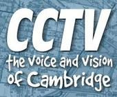

Cambridge Community Television (CCTV)

Website:
http://www.cctvcambridge.org/ Location:
Cambridge, MA
Cambridge Community Television is a public forum for all Cambridge residents, businesses and organizations. CCTV provides training and access to telecommunications technology so that all may become active participants in electronic media. CCTV strives to involve the diverse population of Cambridge as producers & viewers, and to strengthen its efforts through collaborations with a wide variety of community institutions.
Supported Projects
Citizen Journalism Coordinator
Julie Adler
7/2007 — 6/2008
As the way we communicate rapidly changes, Cambridge Community Television faces the future, and bringing access to emerging communication technologies to all of the people of our City becomes a priority.
Projects:
Neighbor 2 Neighbor
•work with CCTV staff to develop this new program to embed citizen journalists in each of the city’s neighborhoods
•develop a plan to recruit and train the journalists
•work with the journalists to transfer digital media/web skills to community activists
•expand utilization of CCTV’s web site to address community issues
Develop and Implement Newscasts Targeted to 6th grade students
• Use existing design to help schools acquire simple news studios
• Research existing models for school news programs
• Develop and implement curriculum and newscasts to be recorded and FTP to a website and for retransmission on the school educational access channels
Youth Media Network Development:
• Develop citywide network for students involved in media making
• Work with the Youth Video Exchange Network to help create pathways for youth produced media to be shared nationally.
• Act as liaison to the Boston based Regional Youth Media Arts Education Collaborative (RYMAEC) to help meet the goal for shared curriculum, best practices and youth produced media.
Julie’s work was instrumental in meeting our program goals of elevating more local residents to present media on the issues that affect their communities. We have countless blog posts, videos, photos and other pieces of issue-oriented media published on our website, and they have been seen by thousands of visitors in the course of the year. Julie’s execution of the Neighbormedia program also greatly successful in bringing our communities closer to each other. We saw many scenarios in which one citizen journalist published material about a community issue which then led to a high level of readership, discussion and participation around that particular issue. Bringing local producers together with their local audience is a massive tool for building community.
“One of the participants in the program came from a traditional journalism background and had a fair amount of difficulty acknowledging the value of our model of citizen journalism. Over time, and with significant reinforcement from Julie, this participant eventually became one of the most loyal evangelists of our citizen journalism program.”
- Sean Effel, supervisor
Outreach Coordinator
Jennifer Schmitt
9/2004 — 9/2005
Goal 1. Increase participation of users and viewers of Cambridge Community Television.
Goal 2. Increase access in Cambridge.
To quickly review Jennifer’s first quarter initiatives, her project included research into the demographic makeup of the city of Cambridge, preparing a significant report on ethnic and language identity by zip code of our community, and identifying organizations in our community to build relationships with to better serve our city. Jennifer’s second quarter worked to increasing member production rates and values by fostering and mentoring two member production groups; one group for the support of active producers working on individual productions, and the next a group focused on cooperatively producing a current affairs program.
Jennifer has also been responsible for a couple of community television events. These are events that, without CCTV and the hard work of our interns, would not have made the nightly news.
In the fourth quarter, a new initiative was born and Jennifer became the supervisor for our Summer Media Institute, a youth media program operated here at CCTV in collaboration with the Mayor’s Summer Youth Employment Program. The Mayor’s office runs a program each summer placing teenagers for six weeks in various host sites with the intent to provide structure, job training, and income for youth in the city of Cambridge.
The twelve teenagers placed with CCTV undergo a rigorous media training program including digital camera and editing techniques, documentary and fiction production, software and other hard skills through project-based workshops and weekly screenings. This program empowers our twelve Cambridge youth each year with the ability to produce media that more accurately reflects their lives and experiences in our city. This program is several years old and graduates continue to return for our services and facilities in their independent media work.
We adore Jennifer Schmitt. This year has been the best volunteer experience that CCTV
has had with the VISTA program and it is clearly because of Jennifer’s strength of
character and investment in her work. She far exceeded our expectations and through her
year long service she greatly improved the services CCTV has to offer our community.
In fact, her excellent work was the reason we have offered her a full time position here at
CCTV beyond her service year.
Related Content
None created yet!